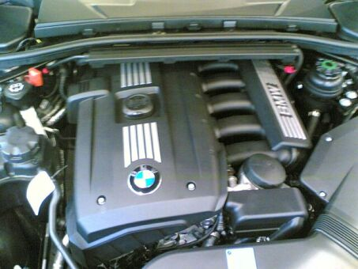

Photo by Jussi Korkala, released to the public domain, via Wikimedia Commons.2.5L naturally aspirated inline-6, one of the first BMW engines built with a magnesium/aluminum composite block instead of all-aluminum or iron. Uses dual VANOS (variable valve timing) and Valvetronic (variable valve lift, which lets the engine run without a traditional throttle plate for most operating conditions).
Output is roughly 215-218 hp depending on market and model year.
Known wear points across the N52 family, not specific disasters, just things an owner this age should expect eventually:
- Electric water pump and plastic thermostat housing failures - Plastic coolant pipes and expansion tank cracking with age and heat cycles - VANOS solenoid issues causing rough idle or a check engine light - Valve cover gasket seepage, usually shows up as a faint burning smell after the engine's been running a while
Source: general public automotive reference knowledge. Verify specifics for your exact build and year.